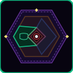
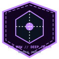
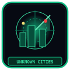

The urban geography of Somnarak is centered around the Directorate Spire in Zone A, extending through industrial sectors to the outer Perimeter Bulwark and the lethal radioactive Desolate.
ZONE A: CORE NEXUS
The central governmental spire housing the Alpha Tree root complex and Directorate Command.
ENTER CORE NEXUS →
ZONE B: WEST WARD
Densely populated residential mega-blocks sheltered beneath atmospheric filtration domes.
ENTER WEST WARD →ZONE C: COLLECTOR'S ROW
Sprawling industrial scrap-yards, relic bazaars, and illicit modification workshops.
ENTER COLLECTOR'S ROW →ZONE D: FORGE & GARDENS
High-tech R&D foundries and bio-synthetic botanical gardens cultivating Han flora.
ENTER FORGE & GARDENS →ZONE E: PERIMETER BULWARK
Massive 400-meter outer perimeter battlements guarding against the outer wasteland.
ENTER PERIMETER BULWARK →THE DESOLATE (황무지)
Radioactive crystalline wasteland populated by rogue Distortions and wandering scavengers.
VIEW WASTELAND ATLAS →THE HOLLOW GLASS
Vitrified desert plain where sound and memories freeze into solid crystalline pillars.
VIEW HOLLOW GLASS →LIBRARY OF STOLEN PASTS
Subterranean memory vault storing erased historical scrolls and forbidden records.
ENTER THE LIBRARY →
THE MAW
The abyssal containment pit where raw Sorrow Entities are harvested for energy extraction.
ENTER THE MAW →ORPHAN BELL TOWER
Historic clockwork monument housing the resonant bell that signals morning curfew lift.
VIEW BELL TOWER →
UNKNOWN CITIES & RUINS
Submerged precursor metropolises lost beneath the radioactive dust of the deep wasteland.
EXPLORE RUIN ATLAS →DISTRICT STRUCTURE & VEIL
Urban architectural blueprints detailing the 8 districts, Veil boundaries, and rail routes.
VIEW URBAN SCHEMATIC →The city of Somnarak is structured as five concentric urban zones encircling the colossal Alpha Tree. Beneath this surface sprawl lies the subterranean chasm known as The Maw, through which the toxic, bioluminescent waters of the Weeping river carve into the dark bedrock. Beyond the outermost defensive bulwark lies The Desolate—thousands of square kilometers of scorched wasteland littered with petrified ruins of pre-Cycle civilizations.
| District / Landmark | Zone / Location | Han Density | Civilian Population | Primary Environmental Hazard | Defensive Garrison |
|---|---|---|---|---|---|
| Zone A: Core Spire | Metropolitan Center | Extremely High (Pure Flux) | ~45,000 (Directorate Staff) | Resonant cognitive saturation, spatial warp anomalies | Directorate Elite Honor Guard & Automated Spires |
| Zone B: West Ward | Western Quadrant | High (Combustion Vapor) | ~280,000 (Refinery Workers) | Thermal exhaust bursts, toxic particulate clouds | SED Industrial Suppression Corps |
| Zone C: East Arcology | Eastern Quadrant | Moderate (Refracted Wave) | ~420,000 (Commercial/Guilds) | Corporate espionage, memory theft, data corruption | High Council Private Enforcers & Giltong Units |
| Zone D: The Flanks | Southern & Northern Flanks | Low to Moderate | ~650,000 (Tenements/Citizens) | Effluent seepage, black-market violence, structural decay | Urban Containment Division (UCD) Regulars |
| Zone E: Outer Bulwark | Perimeter Ring Wall | Variable (Wasteland Spill) | ~90,000 (Border Wardens) | Night Aberration assaults, howling radiation dust | Bulwark Heavy Bastion Artillery & Border Wardens |
| The Maw | Subterranean Chasm | Critical (Unrefined Abyss) | ~15,000 (Salvagers/Miners) | Abyssal vortex suction, Coherence loss, drowning | Floor 2 Keep Sentinels & Hydraulic Gates |
| The Desolate | Outer Wastelands | Corrosive Void Flux | Nomadic (Caravans Only) | Perpetual dust storms, petrified entity corpses | Horizon Armored Crawler convoys |
| The Hollow Glass | Northern Desert Anomaly | Prismatic Refraction | Uninhabited | Psychic hallucinations, chronological echo loops | Restricted Exclusion Zone (Automated Beacons) |